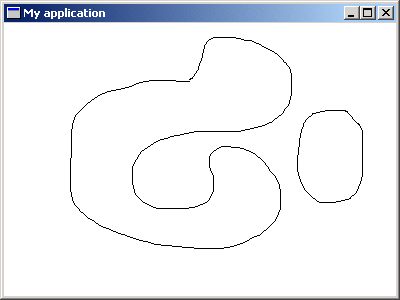

Tutorial Step 4
This sample builds on the knowledge learnt in the previous tutorials (1, 2 and 3) and again demonstrates the use of a WEL_CLIENT_DC.

Compiling
To compile the example:
- Launch EiffelStudio.
- Select Use existing Ace (control file) and click OK.
- Browse to Eiffel50\examples\wel\tutorial\step4\.
- Choose Ace.ace
- Choose the directory where the project will be compiled, by default the same directory containing the Ace file.
- Click OK.
Running
After launching the sample, you will see a WEL_FRAME_WINDOW displayed. By holding
down the left mouse button, and moving the mouse (Within the client area of the window), you will be able to draw on the client area of the window. Pressing the right mouse button within the window will clear the client area of the window.
Under the Hood
This system is an improvement over tutorial step3 and only uses WEL techniques demonstrated in previous tutorials to
allow you to draw on the client DC of the window.
This sample contains the following classes: